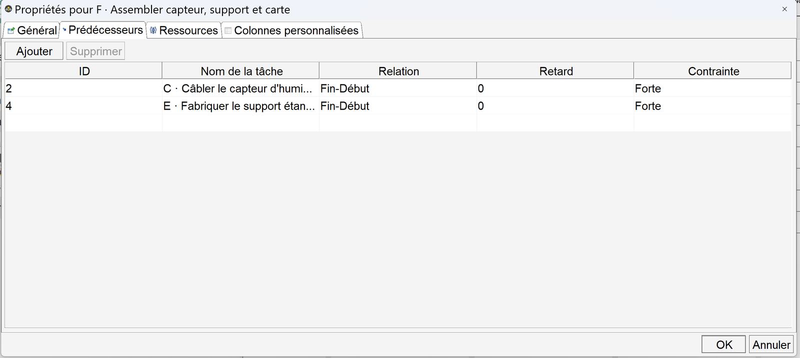
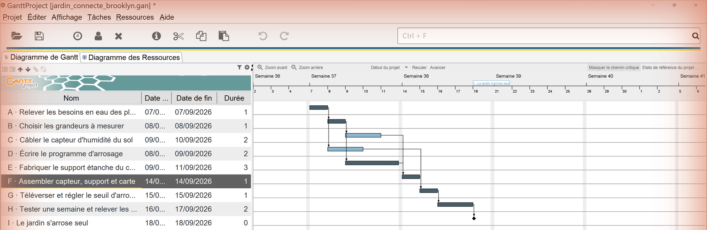

🎫 Billet d'entrée — trois questions (5 min, sans note)
Réponds avec ce que tu sais déjà. Le but est de savoir d'où l'on part, pas de te juger.
🎒 Je révise en 3 minutes
Une tâche est une chose dont on peut dire, à un instant donné, si elle est terminée ou non. « Travailler sur le capteur » n'est pas une tâche : on ne saura jamais quand c'est fini. « Câbler le capteur sur la carte » en est une.
Un jalon ne dure pas. C'est un point de contrôle : « le prototype fonctionne », « le cahier des charges est validé ». On l'écrit avec une durée de zéro. Il ne fait pas avancer le projet ; il dit qu'on est arrivé quelque part.
Une contrainte d'antériorité dit « B ne peut pas commencer avant que A soit finie ». C'est la seule contrainte que demande le programme, et c'est la plus utile : elle sépare ce qui doit attendre de ce qui pourrait avancer en même temps.
Deux tâches sans contrainte entre elles peuvent avancer en même temps. C'est là, et seulement là, qu'un groupe gagne du temps en se répartissant le travail.
✂ Activité 1 — Le planning en bandes de papier (~25 min)
On ne commence pas par un logiciel. Un diagramme de planification, c'est d'abord des longueurs qu'on peut comparer à l'œil. Une bande deux fois plus longue, c'est une tâche deux fois plus longue : rien à expliquer, ça se voit.
Le matériel
Une feuille A4, une règle, des ciseaux, et du ruban adhésif ou de la colle. Rien d'autre. Aucun branchement, aucune alimentation : cette activité ne présente aucun risque électrique.
Ce que tu fais, dans l'ordre
- Prends ton projet de l'année — celui de ta classe, pas un exemple. Écris la liste de ce qu'il y a à faire.
- Garde uniquement ce dont tu peux dire « c'est fini ». Le reste, tu le reformules ou tu le jettes.
- Donne à chaque tâche une durée en séances. Tu ne la connais pas : tu l'estimes. C'est normal, et c'est le métier.
- Découpe une bande de papier par tâche : 2 cm par séance. Une tâche de 3 séances fait 6 cm.
- Trace sur une feuille une ligne de temps graduée en séances, une graduation tous les 2 cm.
- Colle les bandes, une par ligne, en commençant chacune le plus tôt possible : juste après la fin de la dernière tâche qu'elle doit attendre.
- Ajoute un losange à la fin, sans longueur : c'est ton jalon.
Ce choix ne se devine pas depuis la page : c'est toi qui sais si tu as découpé. Le vérificateur, lui, refusera de valider tant que ce n'est pas fait.
Ce que tu écris ensuite
Recopie ci-dessous trois tâches de ton projet, une par ligne, avec leur durée en séances et ce qu'elles doivent attendre. Puis, en quatrième ligne, écris ton jalon.
Un exemple de forme, pour que ce soit lisible :
Câbler le capteur — 2 séances — après : choisir les grandeurs
🔍 La correction, et pourquoi elle est comme ça
Ce qui était attendu. Trois lignes qui sont vraiment des tâches — un verbe d'action, et un état de fin qu'on pourrait constater — chacune avec un nombre de séances. Et une quatrième ligne qui est un jalon : pas de durée, un état atteint.
L'erreur la plus fréquente : la fausse tâche. « Travailler sur le boîtier », « avancer le programme », « faire des recherches ». Aucune ne peut être déclarée terminée. Ce sont des intentions, pas des tâches. Le test : si je reviens dans une semaine, est-ce que je peux dire oui ou non ?
La deuxième erreur : la durée qu'on refuse d'écrire parce qu'« on ne peut pas savoir ». Justement : on ne peut pas savoir, donc on estime, on écrit le chiffre, et à la fin du projet on compare avec ce qui s'est passé. Une estimation qu'on n'a jamais confrontée au réel ne s'améliore jamais.
Piège classique. Écrire « après : tout le reste » pour être tranquille. Une tâche qui attend tout n'apprend rien : c'est en cherchant ce qu'elle attend vraiment qu'on découvre ce qui aurait pu avancer en parallèle.
À retenir. Une tâche : on peut dire si elle est finie. Une durée : on l'estime, on ne la connaît pas. Une contrainte d'antériorité : B attend A. Un jalon : un point de contrôle sans durée. Deux tâches sans lien : elles avancent ensemble.
Critère de réussite : tes bandes sont collées, et tes trois tâches pourraient être déclarées terminées par quelqu'un qui passerait dans la salle.
🌱 4e · Organiser — le jardin connecté de Brooklyn
Cette fois, on te donne les tâches et leurs durées. On ne te donne ni les dates, ni l'ordre. Organiser, c'est établir ce que chaque tâche doit attendre, puis en déduire quand elle peut commencer.
| Tâche | Ce qu'il y a à faire | Durée (séances) | Ne peut commencer qu'après |
|---|---|---|---|
| A | Relever les besoins en eau des plantes de la cour | 1 | — |
| B | Choisir les grandeurs à mesurer | 1 | A |
| C | Câbler le capteur d'humidité du sol | 2 | B |
| D | Écrire le programme d'arrosage | 2 | A |
| E | Fabriquer le support étanche du capteur | 3 | B |
| F | Assembler capteur, support et carte | 1 | C, E |
| G | Téléverser et régler le seuil d'arrosage | 1 | D, F |
| H | Tester une semaine et relever les mesures | 2 | G |
| I | Le jardin s'arrose seul ◆ jalon | 0 | H |
a) Les contraintes d'antériorité, une par une
La colonne « ne peut commencer qu'après » est déjà remplie : lis-la, elle est le cœur du travail. Vérifie que tu la comprends.
b) Les dates au plus tôt
Une tâche commence le plus tôt possible : juste après la fin de la plus tardive des tâches qu'elle attend. Complète, en numéros de séance (la séance 1 est la première du projet).
c) Ce que tu écris
Deux tâches de ce projet peuvent avancer en même temps. Nomme-les, dis pourquoi elles le peuvent, et dis ce que ton groupe ferait concrètement de cette information — qui fait quoi, pendant que qui fait quoi.
🔍 La correction, et pourquoi elle est comme ça
Les dates au plus tôt. A en séance 1, B en séance 2, C en séance 3, D en séance 2, E en séance 3, F en séance 6, G en séance 7, H en séance 8, I en séance 10. Le projet dure donc 9 séances.
Comment on les trouve, sans logiciel : on part du début, et pour chaque tâche on regarde toutes celles qu'elle attend ; on prend celle qui finit le plus tard, et on commence juste après. C'est tout. Le logiciel ne fait rien d'autre, il le fait juste plus vite.
Le parallélisme. Après B, C (câbler) et E (fabriquer le support) ne s'attendent pas : elles peuvent être menées ensemble. D (écrire le programme) n'attend que A : elle peut démarrer très tôt, pendant que les autres câblent. C'est exactement l'information qui manque à un groupe qui « se répartit le travail » au hasard.
Les marges. Le calcul donne : C (+1), D (+3). Une marge de +3 sur D veut dire que le programme pourrait être écrit trois séances plus tard sans décaler la fin — donc que se précipiter dessus ne rapporte rien.
Piège classique. Commencer une tâche « puisqu'on a le temps », sans regarder ce qu'elle attend. Assembler (F) avant que le support (E) soit fabriqué, ce n'est pas de l'avance : c'est du travail à refaire.
Deuxième piège. Confondre « peut commencer » et « doit commencer ». Une date au plus tôt n'est pas un ordre : c'est une limite basse. On ne peut pas commencer avant ; on peut commencer après, dans la limite de la marge.
![Diagramme de planification du projet.
Une ligne par tâche, une colonne par séance. Les tâches A → B → E → F → G → H → I sont
dessinées en barres pleines colorées : ce sont celles du chemin le plus long,
elles n'ont aucune marge. Les autres sont en barres sombres, chacune posée dans
un rectangle en pointillés qui va de sa date au plus tôt à sa date au plus tard,
avec une barre fantôme montrant où elle pourrait être placée au plus tard, et sa
marge écrite à droite. Des flèches relient chaque tâche à celles qui l'attendent.
Le projet tient en 9 séances.](Images/gantt_jardin-connecte-brooklyn.svg)
Trois choses à savoir lire là-dessus. 1. Les barres pleines colorées forment le chemin le plus long (A → B → E → F → G → H → I) : elles n'ont aucun jeu, une séance de retard sur l'une d'elles est une séance de retard sur tout le projet. 2. Les autres ont du jeu, et le rectangle en pointillés le montre : la tâche D aurait pu être placée n'importe où dans son rectangle sans rien retarder — la barre pâle indique sa position la plus tardive possible. 3. Ce chemin peut changer. Allonge une tâche à marge jusqu'à remplir son rectangle : elle devient critique, et une autre cesse de l'être. Le chemin le plus long n'est pas gravé dans le projet, il dépend des durées.
À retenir. Organiser, c'est écrire ce que chaque tâche attend, puis faire descendre les dates de proche en proche : chaque tâche commence après la plus tardive de celles qu'elle attend. Les tâches qui ne s'attendent pas se mènent ensemble.
Critère de réussite : tes dates sont justes, et tu peux dire à ton groupe qui travaille sur quoi en même temps.
🖥 Le logiciel — GanttProject, pas à pas
Le logiciel n'est pas la compétence. Ce qui est évalué, c'est de savoir ce qu'est une tâche, une durée, une contrainte, et le chemin le plus long. On peut prouver tout cela avec des bandes de papier. Le logiciel sert à recalculer vite quand quelque chose change — et c'est déjà énorme.
🅰 Voie A — avec le logiciel
Tu ouvres GanttProject, tu saisis, tu lis, tu affiches le chemin critique. Tu rends une capture de ton diagramme.
🅱 Voie B — sans ordinateur
Tu fais tout avec les bandes de papier de l'étape 1 et une ligne de temps graduée. Tu rends ta feuille. Les mêmes questions te seront posées, et elles valent autant.
Ces cinq images sont de vraies captures du logiciel, prises en
français, sur le fichier du jardin connecté que tu peux ouvrir toi-même
(jardin_connecte_brooklyn.gan, à côté de cette page). Les détails de version sont
dans SOURCES_MEDIAS.md.
① Saisir les tâches et les durées
Au démarrage, GanttProject affiche deux moitiés. À gauche, un tableau : une ligne par tâche. À droite, le dessin : une barre par tâche, posée sur un calendrier. Les deux montrent la même chose. Quand tu changes une valeur à gauche, la barre bouge à droite — c'est le seul vrai service que rend le logiciel.
![Fenêtre de GanttProject en français. En haut, la barre de menus : Projet, Éditer, Affichage, Tâches, Ressources, Aide. En dessous, deux onglets : Diagramme de Gantt, actif, et Diagramme des Ressources. Le tableau des tâches occupe la gauche, avec quatre colonnes : Nom, Date de début, Date de fin, Durée. Neuf lignes sont remplies, de A à I, pour le projet du jardin connecté : A Relever les besoins en eau des plantes de la cour, une séance ; B Choisir les grandeurs à mesurer, une séance ; C Câbler le capteur d'humidité du sol, deux séances ; D Écrire le programme d'arrosage, deux séances ; E Fabriquer le support étanche du capteur, trois séances ; F Assembler capteur, support et carte, une séance ; G Téléverser et régler le seuil d'arrosage, une séance ; H Tester une semaine et relever les mesures, deux séances ; I Le jardin s'arrose seul, durée zéro. À droite, le début du diagramme montre les barres correspondantes.](Images/ganttproject_1_saisir_les_taches_et_les_durees.png)
Comment ajouter une tâche : menu Tâches, puis la première entrée du menu. Une ligne vide apparaît ; tape le nom, valide avec Entrée.
Si tu ne vois pas la colonne Durée : élargis le tableau en faisant glisser la séparation verticale entre le tableau et le dessin, vers la droite.
Attention à la première ligne du projet. GanttProject place les tâches sur de vraies dates de calendrier, pas sur des « séances ». Il saute les samedis et les dimanches tout seul. Ici, une séance = un jour ouvré : la séance 1 est le lundi de la première semaine. Ça ne change rien au raisonnement, et ça évite de recompter les week-ends à la main.
② Changer une durée — la boîte des propriétés
La durée se tape directement dans la colonne Durée. Mais il vaut mieux connaître la boîte complète : c'est là que tout se règle. Double-clique sur une tâche.
![Boîte de dialogue intitulée Propriétés pour F, Assembler capteur, support et carte. Elle comporte quatre onglets : Général, actif ; Prédécesseurs ; Ressources ; Colonnes personnalisées. Dans l'onglet Général on lit : Nom, avec le texte de la tâche ; une case à cocher Jalon, décochée ; Options de planification, réglé sur dans cette boîte de dialogue ; Date de début, 14 septembre 2026 ; Date de fin, grisée, 14 septembre 2026 ; Durée, 1 ; Date de début au plus tôt, grisée ; Priorité, Normale ; Avancement, 0 ; Afficher dans la planification ; Graphisme ; Couleurs ; Lien internet. À droite, une grande zone Notes, vide. En bas à droite, les boutons OK et Annuler.](Images/ganttproject_2_proprietes_duree_de_la_tache.png)
Pour créer un jalon : coche Jalon. La durée passe à zéro et la barre devient un losange. C'est ainsi qu'on écrit « le jardin s'arrose seul » : ce n'est pas un travail, c'est un résultat atteint.
Pourquoi « Date de fin » est grisée : parce qu'elle est calculée. Tu donnes le début et la durée ; la fin en découle. Un logiciel de planification refuse qu'on lui impose deux fois la même information — s'il te laissait taper les trois, tu pourrais écrire quelque chose de faux.
③ Déclarer ce qu'une tâche doit attendre
C'est le geste important de tout l'atelier. Sans lui, le logiciel n'est qu'un tableau de dates ; avec lui, il devient un outil qui recalcule.
Dans la même boîte, va sur l'onglet Prédécesseurs.

Ce que « Fin-Début » veut dire : la fin de la tâche attendue commande le début de celle-ci. C'est exactement la contrainte d'antériorité du programme, et c'est la seule dont tu auras besoin.
Pour en ajouter une : clique Ajouter, puis choisis la tâche dans la liste. Le Retard reste à 0.
Ici, F attend deux tâches : C et E. Le logiciel la fera commencer après la plus tardive des deux, tout seul — c'est le calcul que tu as fait à la main en 4e.
L'autre façon de faire, plus rapide et plus risquée : sur le dessin, attraper le bord d'une barre et le tirer jusqu'à une autre barre. Le lien se crée. C'est pratique, mais on relie facilement les mauvaises tâches sans s'en apercevoir. Après un glisser-déposer, rouvre toujours l'onglet Prédécesseurs pour vérifier.
④ Lire le diagramme : les barres et les dates
Une fois les contraintes posées, le logiciel place tout. Les barres se décalent, et des flèches apparaissent : chaque flèche est une contrainte que tu as déclarée.
![Fenêtre complète de GanttProject. À gauche le tableau des neuf tâches avec leurs dates et durées ; à droite le diagramme. L'échelle du haut affiche Semaine 36, Semaine 37, Semaine 38, Semaine 39, Semaine 40, et les numéros de jours en dessous. Neuf barres bleues sont posées en escalier, une par tâche, reliées par des flèches noires qui partent de la fin d'une barre pour rejoindre le début de la suivante. La dernière tâche est un petit losange bleu, sans longueur. Deux barres, celles de C et de D, ne sont reliées à rien vers l'aval immédiat et se chevauchent dans le temps avec d'autres barres. En haut du diagramme, les commandes Zoom avant, Zoom arrière, Début du projet, Reculer, Avancer, et à droite Afficher le chemin critique.](Images/ganttproject_4_les_barres_et_les_dates.png)
Ce que raconte le dessin : deux barres qui se chevauchent verticalement sont deux tâches qui avancent en même temps. C'est le parallélisme, et c'est visible d'un coup d'œil — impossible à voir dans une simple liste.
Si tes barres sont minuscules : clique Zoom avant. Si tu es perdu dans le calendrier : Début du projet te ramène au premier jour.
⑤ Faire apparaître le chemin le plus long
En haut à droite du diagramme, une commande : Afficher le chemin critique. Clique dessus.

Celles qui restent unies — ici C et D — peuvent prendre du retard sans décaler la fin du projet.
Le bouton change de nom : il affiche maintenant Masquer le chemin critique. C'est ainsi qu'on sait qu'il est actif.
Ne dis jamais « les barres rouges ». Selon la version et le système, la mise en évidence peut être une hachure, une couleur, un contour. Dis « les tâches mises en évidence » — ce sera vrai partout, et tu ne seras pas perdu devant un autre écran.
Vérifie que tu sais te repérer
🔍 La correction, et pourquoi elle est comme ça
La commande du chemin critique est en haut à droite du diagramme, pas dans un menu. Beaucoup d'élèves la cherchent dans « Affichage » et abandonnent : elle est sur la barre du diagramme lui-même, à l'opposé des commandes de zoom.
L'onglet Prédécesseurs est le seul endroit où l'on voit et vérifie les contraintes d'une tâche. Le glisser-déposer les crée ; cet onglet les prouve.
La case Jalon met la durée à zéro et remplace la barre par un losange. Mettre « 0 » dans la colonne Durée produit le même résultat : les deux chemins mènent au même endroit, et c'est normal — un logiciel offre souvent plusieurs façons de dire la même chose.
La date de fin est calculée à partir du début et de la durée. La griser est une protection : elle empêche d'écrire un planning qui se contredit lui-même.
Fin-Début : la fin de l'une commande le début de l'autre. C'est le mot du métier pour la contrainte d'antériorité du programme.
Le piège du logiciel. Un diagramme joli ne prouve rien. Si les contraintes n'ont pas été déclarées, toutes les barres commencent le premier jour, le dessin est net, et il est faux. Les flèches sont la preuve que le planning existe : pas de flèche, pas de planning.
À retenir. Le logiciel ne planifie pas à ta place : il applique les contraintes que tu lui as données, et il recalcule quand tu changes une durée. Le travail — identifier les tâches, estimer les durées, dire ce qui attend quoi — reste entièrement le tien.
Critère de réussite : ton diagramme a des flèches, un losange à la fin, et tu peux montrer du doigt une tâche qui n'est pas sur le chemin le plus long.